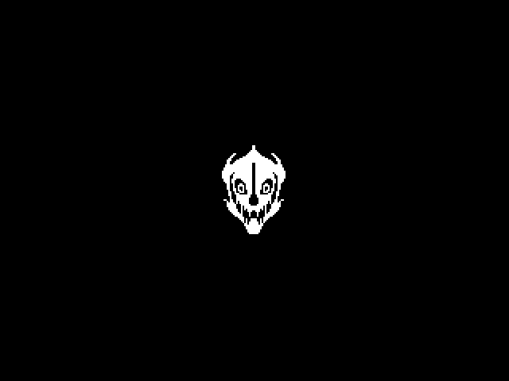

마왕 패턴
{kind=link}
⭐필독⭐
- 마왕은
에고 소드 Hold, 으로 상태가 분류됨.- 각 상태 별로 사용할 수 있는 패턴이 다름.
- 각 상태는
투척 패턴과회수 패턴을 패턴을 통해 전환됨.- 이 패턴은 ‘
사용 우선 순위’를 지닐 때가 있으니 개발 시 주의 필요.
- 이 패턴은 ‘
에고 소드 Drop시에고 소드는 별개의 오브젝트로 기능.
❓페이즈 전환은 없는가
- 본래는 페이즈 2개로 나누어서 개발을 하려 했지만, 에고 소드를 들 때 안들 때, HP 감소 시, 발악, 무력화 해제 시 발동 등 다양한 패턴이 있고, 추후 밸런스 및 퀄리티 유지를 위해서 일단은 페이즈 1개만 개발
- 추후 개발 안정 시, 아마도 방학 즈음. 페이즈 2 추가 예정
📝 기타
- 몇몇 패턴 별로 다음 패턴까지 주기(대기)나 패턴 우선 순위를 정해두려 하는데 이는 각 패턴에 적어둠.
- 경고/공격 범위, 속도는 개발 후 세부 조정 예정. 일단은 임시로 작업할 것.
- 완성본을 보고 패턴이 너무 반복되는 것으로 보일 시 각 상태마다 패턴 1개 씩 추가 고려
🎥 임시 연출
- 돌진을 제외한 경고 범위 내 피해는 의 해골, 마법사의 폭파와 동일한 폭파 애니메이션 사용
보스 레벨
- 마녀 보스와 동일한 정사각형의 맵을 사용
이미지
- 지금 이미지가 없는데. 이건 나중에 되면 만듬
- 일단은 아무 이미지로만 부탁드림. 굽신굽신
[연속 찌르기] - 에고 소드 Hold
- 돌진 패턴의 일종


[1] 조준 및 경고
- 유저의 방향으로
1초동안 경고경고 동안 조준선은 유저를 추적
[2] 공격 시도 = 경고 후
- 경고 종료 시, 유저의 마지막 위치를 지정
- 지정한 위치로 보스 이동.
- 이동 중 유저와 충돌 시 피해를 입힘
[2-1] 속도
- 순간 이동으로 보일 정도로 매우 빠른 속도로 임의 설정 바람
- 잔상 효과 가능하면 추가 바람
[3] 후퇴 = 공격 위치에 도달한 직후
- 마왕은 공격 시도 전 위치로 이동
- 속도는 공격 속도와 같음
[4] 반복
- [1]에서 [3]의 과정을 (이전의 일격 포함)
총합 3회 반복
- 각 횟수마다 [1]의 경고 시간을
0.2초감소.- 1회: 경고 시간 1초
- 2회: 경고 시간 0.8초
- 3회: 경고 시간 0.6초
[5] 패턴 종료
- 마지막 공격의 경우 [3] 후퇴 과정 없이 마지막 돌진 위치에서 패턴 사용 종료
[강력한 휘두르기] - 에고 소드 Hold


[1] 이동
- 유저의 위치로
유저의 이동속도 4배의 속도로 이동
- 잔상 효과 추가
[2] 경고 표기
- 유저의 방향으로 부채꼴과 실선 경고 생성
[2-1] 부채꼴 경고
- 일단 유저의 공격 범위와 동일한 수준으로 임의 설정
[2-2] 실선 경고

- 가운데를 중심으로 좌우 30도 만큼 퍼짐
- 실선은 맴 끝까지 이어짐
[3] 공격
- 부채꼴 경고 범위 내 유저에게 피해를 줌
- 실선의 경우 하단 연출을 참고. 빠르게 퍼지는 유사 탄막 공격
- 임시로 탄막으로 해도 가능.
[3-1] 부채꼴 공격의 연출
- 유저의 공격과 같이 참격(베기) 이펙트
[3-2] 실선 공격의 연출
{kind=link}
{kind=link}
- 세피리아 2번째 보스처럼 실선을 따라서, 안쪽에서 바깥쪽으로 물수제비 하듯 이펙트가 퍼짐
[에고 소드 투척] - 에고 소드 Hold, 에고 소드 투척
- 보스가 에고 소드 보유 시 사용 가능.
- 보스가
에고 소드 Hold상태에서 패턴3회사용 시. 이후 패턴은 투척을우선 발동


[1] 조준 및 경고
- 특정 경고 없이 오직 스프라이트 변경을 통해 경고
- 이런 식의 따로 경고 없는 패턴들도 테스트 해보고 싶음.
1.4초동안 경고
[2] 투척 및 패턴 종료
- 유저의 방향으로 에고 소드 투척
- 보스는
에고 소드 Drop상태로 전환
- 해당 투척 후
패턴 종료판정- 다른 패턴과 엮이는 것이 핵심
[3] 투척 된 에고 소드
- 벽에 닿은 에고 소드는 총
5회튕김
- 이동 중 에고 소드는 계속 시계 방향으로 회전.
- 따로 연출이나 스프라이트가 완성되면 그것으로 변경.
- 공격 범위를 크게 할 것이라 어떤 식이든 연출이 필요할 듯.
[3-1] 튕기는 방식
- 당구, 벽돌 깨기처럼 튕기는 방식을 생각하는데 이 부분에 문제가 있으면 언질 바람
[3-2] 속도
유저의 기본 이동 속도의5배의 속도
[4] 고정
- 5번째 벽에 부딧친 위치에 에고 소드 고정
⭐ 이때부터 에고 소드는
독립 오브젝트로 기능
[유도 마법] - 에고 소드 Drop
- 마구 이동하며 쏘는 패턴.


[1] 탄막 생성
- 보스를 중심으로 퍼지듯 5개의 탄막이 생성.
[생성 위치]

- 다크소울 시리즈 유도 소울 덩어리와 생성 위치/방식 동일
[2] 이동 위치 결정
- 보스를 중심으로 십자 형태 4방향 중 하나를 선택
[3] 이동 및 발사
- 탄막을 유저의 방향을 향해 발사
- 탄막 발사 후 [2]에서 정해진 방향으로 이동
- 이동 시 잔상 효과 추가
0.4초후 다시 발사 및 이동을 하며 탄막이 떨어질 때까지 반복.- 모든 탄막 발사 후 이동까지 마치면
패턴 종료
- 모든 탄막 발사 후 이동까지 마치면
[3-1] 이동 거리
유저의 대쉬 거리와 동일
- 연출도 유저의 대쉬와 동일
[3-2] 탄막 속도
유저의 이동 속도의 5배
[🤔 고민, 연구 필요]
- 4방향 중 랜덤 위치 이동 시, 이동 위치에 벽이 있다면 다른 방향으로 이동하게 하고 싶은데 이부분이 가능한지 언급 바람. 안된다면 패턴 변경 예정
[폭격] - 에고 소드 Drop


[유사 패턴] 세피리아 모그디 패턴
{kind=link}
- 사실상 동일한 패턴
- 연출 또한 현재는 사각형 경고지만 사이즈나 세부적인 것이 정해지면 원형으로 수정될 수 있음
[1] 이동
- 보스는 중앙 좌측, 혹은 중앙 우측으로 이동
- 이는 유저 위치에 따라서 결정.
- 유저가 맵 중앙을 기준으로 좌측에 있다면 우측으로 이동하는 식
- 어느 위치에 있든
0.5초내로 도달
[2] 경고 생성 및 폭파
- 보스 위치의 반대 방향부터 경고 생성
- 좌측에 있다면 우측에서 좌측으로 순서대로 생성
0.3초단위로 순차적으로 생성
- 경고 수는 총
6개로 구성되며 보스의 바로 앞까지로 사이즈 임의 조정
[폭파]
- 경고는 생성 후
0.6초후 범위 내 피해를 입힘
- 마지막 경보가 폭파 시
패턴 종료
[기타] 연속 사용 통제
- 해당 패턴을 연속해서 사용하지 않게 통제 필요
[폭파] - 에고 소드 Drop


[1] 도약
- 유저 위치에 원형 경보 생성. 생성과 동시에 보스는 경보 위치로 도약
[2] 착지
- 어떤 위치든
0.7초에 걸쳐 도달.
- 도달 시 범위 내 피해를 입힘
[3] 경고 표시 - 착지 완료 후 바로 진행
- 착지와 동시에 8방향으로 사각형 경고 생성
- 경고는 동안
0.6초동안 지속
[3-1] 경고 범위

- 8방향, 맵의 끝까지 닿는 방식
- 세부적인 너비는 추후 조정
- 일단 무식하게 크게 부탁함
[4] 공격 및 패턴 종료
- 경고 종료와 함께 범위 내에 피해를 입힘
패턴 종료
[4-1] 연출
- 폭파 같은 것보다는 바닥이 보라색으로 한번 반짝이고 돌아오는 느낌
- 관련된 거 찾으면 전달.
❓이게 왜 에고 소드 Drop 패턴임?
- 손에 마법 에너지를 모으고 덩크슛 하듯 내려치는 컨셉
[에고 소드 패턴]
- 에고 소드는 보스의 패턴 주기와 별개로 작동하는 독립적인 존재
- 에고 소드의 패턴 주기는
1.5초
- 에고 소드가 패턴을
5회사용 시 마왕은 다음 패턴에서회수 패턴을 우선 사용- 패턴은 패턴 1, 패턴 2, 다시 패턴 1 순으로 사용
- 이는 추후 패턴이 추가될 예정
[에고 소드 패턴 1]


[1] 경고 ➕
- 에고 소드 중심으로 십자, 선 형태 경고 생성
- 경고는
1초동안 지속
[2] 발사 ➕
- 경보 위치에 레이저 발사
[3] 경고 ✖️
- 에고 소드 중심으로 엑스, 선 형태 경고 생성
- 경고는
1초동안 지속
[4] 발사 ✖️
- 경보 위치에 레이저 발사
패턴 종료
[경고 범위/방식]


- 맵 끝까지 닿는 ➕, ✖️ 형 경고
연출 - 레이저
{kind=link}

[에고 소드 패턴 2]


[1] 에고 소드 이동
- 에고 소드가 유저의 머리 위로 이동
- 검 끝이 유저를 겨누게 각도 조정
- 유저를 중심으로 원형 경고 생성
- 경고는
1.5초동안 지속
- 경고는
[2] 공격 - 경고 종료 후
- 검이 지면에 박히듯 연출
- 검이 지면에 닿는 순간 피해가 발생
- 검이 떨어지는 것을 보고 대쉬를 누르는 순간 피할 수 있는 범위
패턴 종료
[에고 소드 회수] - 에고 소드 Drop, 에고 소드 회수


[1] 경고
- 보스가 제자리에서 스프라이트(회수 동작)으로 변경
[2] 에고 소드 이동 및 회수
- 에고 소드가 투척과 마찬가지로 회전하며 유저와 충돌 시 피해를 입힘
- 패턴 진행 중 보스가 그로기에 빠져도 검은 계속 이동. 접촉 시 회수로 취급
[2-1] 에고 소드 속도
유저의 기본 이동 속도의5배의 속도
[3] 회수 완료 및 피해 발생
- 에고 소드와 마왕 충돌 시 원형으로 피해 발생
- 임시 범위: 유저의 대쉬로 벗어날 수 있는 정도의 범위
- 범위는 추후 수정 예정
- 보스 상태를
에고 소드 Hold로 변경
패턴 종료
[그로기 해제 시 발동 패턴]


[1] 경고
- 무력화 상태에서 해제와 동시에 발동
- 사운드가 재생
[2] 공격 → [1]의 사운드 재생 완료 후
0.4초후에 보스 중심으로 참격 이펙트 발생.- 이펙트와 충돌 시 유저는 피해를 입음
- 따로 범위 표기 X
패턴 종료
[공격 범위]
- 보스를 중심으로 원형 범위
- 유저가 대쉬로 피할 수 있는 범위
[연출]
{kind=link}
- 이것과 유사. 문제는 참격이 안쪽으로 향하는 문제가 있다만, 일단은 이를 제공
- 추후 수정 버전 제공
[HP 50% 이하 시 우선 사용 패턴]


[1] 경고
- 유저의 반대 방향으로
유저의 대쉬거리 만큼만큼 후퇴
- 유저의 방향으로 사각 경보 범위 생성
- 경고는
0.6초동안 유지.
- 해당 경고는 지속 시간 중 유저를 추적
- 경고는
[2] 경고 - 경고 시간 종료 후
- 경고 방향으로 돌진
- 충돌한 유저에게 피해를 입힘
[2-1] 이동 속도 및 연출
유저의 기본 이동속도의 5배 만큼의 속도로 돌진
- 이동 시 잔상 효과 추가
[3] 경로 변경
- 보스가
벽과 충돌시 유저 방향으로 방향 전환
- 이때 추가 경고 표기 X
[3-1] 연출
- 충돌 시 화면 흔들림 연출 추가
- 유저가 피해를 받았을 때보다 덜 흔들리는 정도
[4] 반복
- [2], [3]의 과정을 벽에 4번 튕길 때까지 반복
[5] 도약
- 4번째 벽에 튕기는 순간 유저 위치에 원형 경보 생성
- 보스는 유저의 위치로
0.5초에 걸쳐 이동.- 연출은 취룡이나 슬라임과 동일
[6] 피해 및 패턴 종료
- 보스가 도약 위치에 도달 시 피해 발생
패턴 종료
- 해당 패턴은 다음 패턴 사용까지
2.3초동안 추가 대기
[최후의 발악]
- 죽을 때까지 멈추지 않는 공격
- 공격을 뚫고 마왕을 때리면 승리하는 방식. 일종의 터치 다운


[0] 발동 조건
- 보스의
HP가 10% 이하가 되면강제 발동
[강제 발생?]
- 무력화, 패턴 사용 중, 디버프 등을 모두 무시한 채로 즉각 사용
[1] 넉백
- 유저를 맵 끝으로 밀어버린 정도의 넉백
[2] 이동
- 보스가 맵 중앙으로 이동
[3-1] 폭격 개시
- 유저를 중심으로
0.2초마다, ±50에 내 랜덤 위치에 경보 생성.- 유저를 중심으로 랜덤한 곳에 경보를 생성하는 것에 가까움.
- 각 경고는 생성 직후
0.4초후 폭파
[3-2] 레이저 쇼
- [에고 소드 패턴 1]과 동일
- 1초 단위로 경고와 발사를 반복
[지속 시간]
- [3-1]과 [3-2]는 마왕이 처치되기 전까지 무한 지속
- 지속 동안 마왕은 패턴을 사용하지 않음